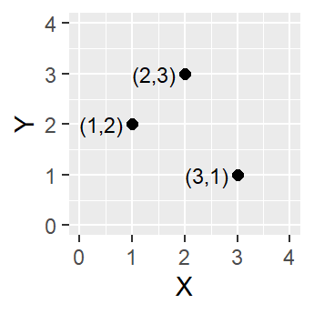
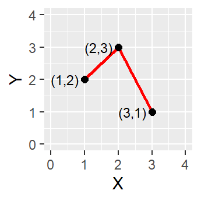
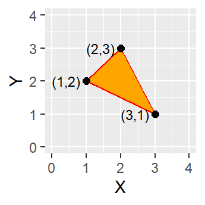
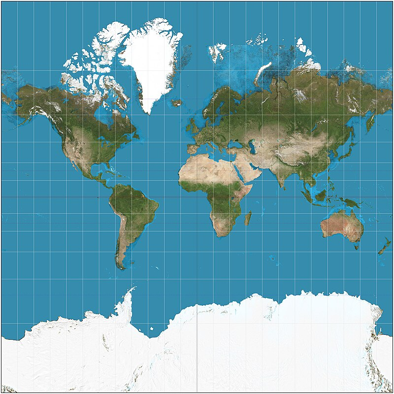
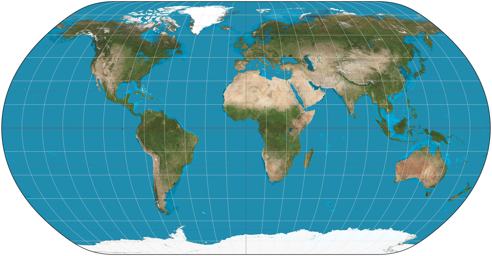
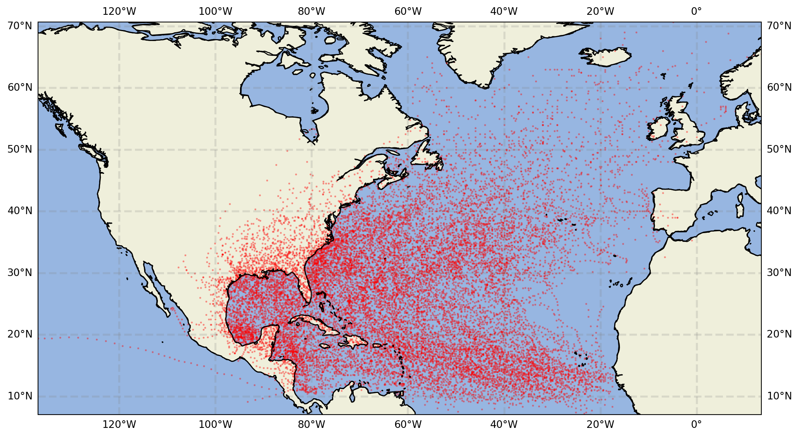
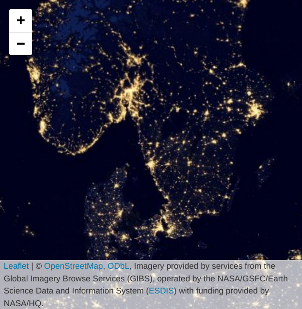
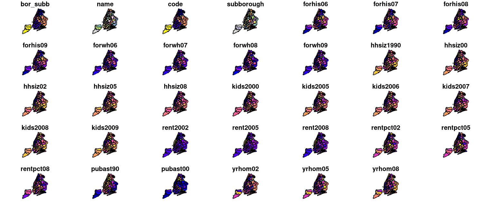
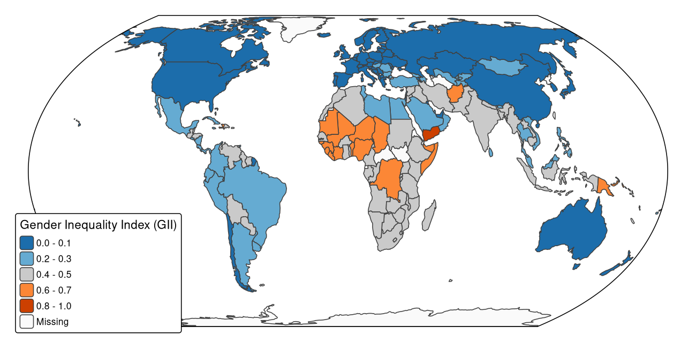
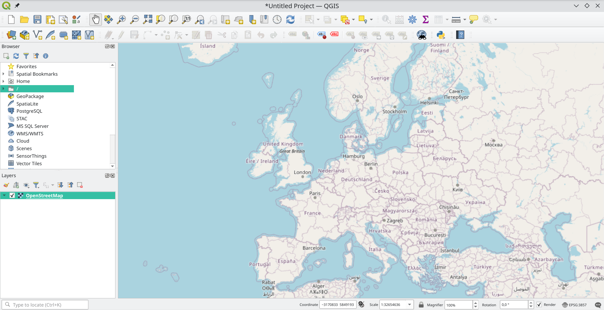

| name | year | month | day | hour | lat | long | status | category | wind | pressure | tropicalstorm_force_diameter | hurricane_force_diameter | |
|---|---|---|---|---|---|---|---|---|---|---|---|---|---|
| 1 | Amy | 1975 | 6 | 27 | 0 | 27.5 | -79.0 | tropical depression | NaN | 25 | 1013 | NaN | NaN |
| 2 | Amy | 1975 | 6 | 27 | 6 | 28.5 | -79.0 | tropical depression | NaN | 25 | 1013 | NaN | NaN |
Bases of spatial visualization
Matteo Tomasini, GRIDH, University of Gothenburg
2025-11-06
Learning outcomes
At the end of the lecture:
- you will have a basic understanding of how to plot things on a map
- you should have a broad view of what tools are used for spatial visualization
- you will be able to plot basic maps starting from geo-referenced data
Summary
- What is GIS? What can it do?
- Georeferenced data an maps
- Spatial visualization with Python
- Spatial visualization with R
- Spatial visualization with QGIS
- A short intro to spatial analysis
Geographic Information Systems
- GIS are “multi-component environment used to create, manage, visualize and analyze data and its spatial counterpart” (from Intro to GIS and spatial analysis by M. Gimond - see further reading at the end)
- In the course yesterday we talked about data types and structures. Geography is just encoded as a bit of data.
- The GIS provides us with a suit of tools to keep up with all the needs of spatial analysis. Typically:
- some type of data management tool (e.g. reading specific formats)
- analysis functions
- plotting functions
Common GIS
- For non-coding people:
- QGIS
- ArcGIS
- GRASS
- For coding people:
- Python with certain libraries such as
geopandasandcartopy - R with libraries such as
sfandggspatial
- Python with certain libraries such as
Geo-referenced data
- To work spatially, our data needs to be geo-referenced, meaning that each data point happens somewhere in space
- Space does not have to be geography: any well-defined spatial reference system will work
- e.g. position on a football pitch
- position with respect to an origin
Spatial data types
(from Intro to GIS and spatial analysis)



Geo encoding, maps and projections
- Georeferencing data = situating it on a map
- Reference can be
- direct (each data point is connected to a piece of spatial data)
- indirect (data points are connected to another piece of data, such as the name of a place, and the place refers directly to a geographic location)
Types of reference
Style 1 (simple table):
| Variable 1 | Lat | Lon |
|---|---|---|
| 50.19572 | 58.112 | 11.951 |
Style 2:
| Variable 1 | Coordinates |
|---|---|
| 50.19572 | POINT(58.112 11.951) |
Style 3:
| Variable 1 | Location |
|---|---|
| 50.19572 | Gothenburg |
| Location | Coordinates |
|---|---|
| Gothenburg | POINT(58.112 11.951) |
Source for your maps
- OpenStreetMap
- often accessible via API in different software
- Natural Earth
- Leaflet
- great to embed in websites
- there are plugins to it in many different environments
Projections
- How to project a 3D object on a 2D plane…?
- Different solutions have been produced since the Hellenistic times!
- Let’s compare different countries! https://thetruesize.com/
- For some examples: List of map projections on Wikipedia
Equirectangular projection (aka Plate Carrée)

Equirectangular projection (source Wikipedia)

Visualizing the equirectangular projection (source Wikipedia)
Mercator projection
Mercator projection (source Wikipedia)

Visualizing the Mercator projection (source Wikipedia)
Natural Earth projection
Natural Earth projection (source Wikipedia)

Visualizing the Natural Earth projection (source Wikipedia)
Spatial visualization with Python
| name | year | month | day | hour | lat | long | status | category | wind | pressure | tropicalstorm_force_diameter | hurricane_force_diameter | geometry | |
|---|---|---|---|---|---|---|---|---|---|---|---|---|---|---|
| 1 | Amy | 1975 | 6 | 27 | 0 | 27.5 | -79.0 | tropical depression | NaN | 25 | 1013 | NaN | NaN | POINT (-79 27.5) |
| 2 | Amy | 1975 | 6 | 27 | 6 | 28.5 | -79.0 | tropical depression | NaN | 25 | 1013 | NaN | NaN | POINT (-79 28.5) |
Opening data with geopandas
| bor_subb | name | code | subborough | forhis06 | forhis07 | forhis08 | forhis09 | forwh06 | forwh07 | ... | rent2008 | rentpct02 | rentpct05 | rentpct08 | pubast90 | pubast00 | yrhom02 | yrhom05 | yrhom08 | geometry | |
|---|---|---|---|---|---|---|---|---|---|---|---|---|---|---|---|---|---|---|---|---|---|
| 0 | 501.0 | North Shore | 501.0 | North Shore | 37.0657 | 34.0317 | 27.3767 | 29.3091 | 13.2540 | 11.8768 | ... | 1000.0 | 21.1119 | 24.8073 | 28.5344 | 47.329128 | 6.005791 | 10.805068 | 12.127853 | 11.547433 | POLYGON ((962498.866 175588.946, 962914.98 175... |
| 1 | 502.0 | Mid-Island | 502.0 | Mid-Island | 27.9822 | 18.1193 | 24.0452 | 31.1566 | 20.0616 | 19.8575 | ... | 950.0 | 32.3615 | 27.2584 | 27.9567 | 35.182323 | 2.287034 | 15.241246 | 15.183111 | 14.682124 | MULTIPOLYGON (((928296.856 163214.206, 928736.... |
2 rows × 35 columns
| start_date | stop_date | timestep | distance | mean_speed | route | duration | trip_currents | trip_winds | stop_times | stop_coords | geometry | |
|---|---|---|---|---|---|---|---|---|---|---|---|---|
| 0 | 1995-07-13 03:47:32 | 1995-07-13 21:32:32 | 900 | 137.873666 | 7.76753 | [ ] | 17.5 | [ [ -0.035721805729810485, 0.16119565821946627... | [ [ 1.3524811593597679, 4.4080772453592711 ], ... | [ ] | [ ] | LINESTRING (8.0888 56.7981, 8.08394 56.81505, ... |
Filtering data
| name | year | month | day | hour | lat | long | status | category | wind | pressure | tropicalstorm_force_diameter | hurricane_force_diameter | geometry | |
|---|---|---|---|---|---|---|---|---|---|---|---|---|---|---|
| 7010 | Nicole | 1998 | 11 | 24 | 0 | 28.3 | -28.0 | tropical depression | NaN | 30 | 1010 | NaN | NaN | POINT (-28 28.3) |
| 7011 | Nicole | 1998 | 11 | 24 | 6 | 27.9 | -29.1 | tropical storm | NaN | 35 | 1005 | NaN | NaN | POINT (-29.1 27.9) |
| name | year | month | day | hour | lat | long | status | category | wind | pressure | tropicalstorm_force_diameter | hurricane_force_diameter | geometry | |
|---|---|---|---|---|---|---|---|---|---|---|---|---|---|---|
| 5003 | Allison | 1995 | 6 | 3 | 0 | 17.4 | -84.3 | tropical depression | NaN | 30 | 1005 | NaN | NaN | POINT (-84.3 17.4) |
| 5004 | Allison | 1995 | 6 | 3 | 6 | 18.3 | -84.9 | tropical depression | NaN | 30 | 1004 | NaN | NaN | POINT (-84.9 18.3) |
Re-projecting data
Projection: EPSG:43261 POINT (-79 27.5)
2 POINT (-79 28.5)
3 POINT (-79 29.5)
4 POINT (-79 30.5)
5 POINT (-78.8 31.5)
...
19533 POINT (-83 29.2)
19534 POINT (-84 30.1)
19535 POINT (-84.6 31.2)
19536 POINT (-84.6 33.2)
19537 POINT (-83.8 35.4)
Name: geometry, Length: 19537, dtype: geometry1 POINT (-6868483.972 2008614.99)
2 POINT (-6780752.912 2083730.075)
3 POINT (-6692415.154 2158760.497)
4 POINT (-6603444.332 2233697.265)
5 POINT (-6500995.437 2293126.747)
...
19533 POINT (-6980891.451 2451918.96)
19534 POINT (-6962702.297 2599161.849)
19535 POINT (-6898058.59 2728969.278)
19536 POINT (-6707749.452 2876003.614)
19537 POINT (-6446573.47 2972709.646)
Name: geometry, Length: 19537, dtype: geometryData summarization
| year | month | day | hour | lat | long | category | wind | pressure | tropicalstorm_force_diameter | hurricane_force_diameter | |
|---|---|---|---|---|---|---|---|---|---|---|---|
| count | 19537.000000 | 19537.000000 | 19537.000000 | 19537.000000 | 19537.000000 | 19537.000000 | 4803.000000 | 19537.000000 | 19537.000000 | 10025.000000 | 10025.000000 |
| mean | 2002.754364 | 8.705635 | 15.732303 | 9.100937 | 27.005763 | -61.560086 | 1.895690 | 50.049393 | 993.484465 | 147.869327 | 14.920698 |
| std | 12.767751 | 1.351928 | 8.896225 | 6.735371 | 10.466211 | 21.173679 | 1.149465 | 25.459513 | 18.748649 | 157.490083 | 34.177737 |
| min | 1975.000000 | 1.000000 | 1.000000 | 0.000000 | 7.000000 | -136.900000 | 1.000000 | 10.000000 | 882.000000 | 0.000000 | 0.000000 |
| 25% | 1994.000000 | 8.000000 | 8.000000 | 5.000000 | 18.300000 | -78.800000 | 1.000000 | 30.000000 | 986.000000 | 0.000000 | 0.000000 |
| 50% | 2004.000000 | 9.000000 | 16.000000 | 12.000000 | 26.600000 | -62.300000 | 1.000000 | 45.000000 | 1000.000000 | 110.000000 | 0.000000 |
| 75% | 2013.000000 | 9.000000 | 24.000000 | 18.000000 | 33.800000 | -45.500000 | 3.000000 | 65.000000 | 1007.000000 | 220.000000 | 0.000000 |
| max | 2022.000000 | 12.000000 | 31.000000 | 23.000000 | 70.700000 | 13.500000 | 5.000000 | 165.000000 | 1024.000000 | 1440.000000 | 300.000000 |
Let’s plot!
Fetch map data with cartopy
import cartopy
import matplotlib.pyplot as plt
bbox = [min(storm_gpd.long), min(storm_gpd.lat), max(storm_gpd.long), max(storm_gpd.lat)]
fig, ax = plt.subplots(subplot_kw={'projection': cartopy.crs.PlateCarree()}, figsize = (15, 7))
storm_gpd.plot(ax=ax, color='r', alpha=0.3, markersize=1)
# Choose coastline resolution
ax.coastlines('50m')
# Limit map to bounding box
ax.set_extent([bbox[0], bbox[2], bbox[1], bbox[3]], cartopy.crs.PlateCarree())
# Add ocean and land features, for visuals
ax.add_feature(cartopy.feature.OCEAN, zorder=0)
ax.add_feature(cartopy.feature.LAND, zorder=0, edgecolor='black')
# Adds gridds to visual
ax.gridlines(crs=cartopy.crs.PlateCarree(), draw_labels=True,
linewidth=2, color='gray', alpha=0.2, linestyle='--')
Fetch data from OSM with osmnx
osmnx is a Python library to access OpenStreetMap data.
Plot maps with R
With R we can use the packages sf and ggplot2, but for quick results leaflet works great:
Background maps with leaflet

Maps in R with ggplot2
Let’s go back to NYC data.
Maps in R with ggplot2
Using tmap for thematic maps
With tmap one can develop thematic maps in an easier way with the same grammar style as ggplot2:
library(tmap)
tm_shape(World, crs = "+proj=eqearth") +
tm_polygons(
fill = "gender",
fill.scale = tm_scale_intervals(values = "-tableau.classic_orange_blue"),
fill.legend = tm_legend(
"Gender Inequality Index (GII)",
position = tm_pos_on_top(pos.h = "left", pos.v = "bottom"),
bg.color = "white")) +
tm_options(earth_boundary = TRUE, frame = FALSE)
Demo of QGIS!
QGIS is a GIS Application that can be both manipulated with a script or by point-and-click. 
Note
Follow along if you have QGIS
A note about spatial analysis
This is not a course about spatial analysis, BUT
- Spatial stuff is not just about visualization!
- Spatial analysis does some pretty cool stuff for you.
- All the GIS software / applications that I presented today allow you to do spatial statistics
- I highly suggest you follow a dedicated course to spatial analysis!
Example of cool spatial analyses: interpolation

Interpolation of data from a few samples
Example of cool spatial analyses: Cholera outbreak in Soho


Example of cool spatial analyses: Network analysis

Analysis of a network of roads. Which is the shortest path between the two points? And the fastest?
InfraVis
InfraVis can support you if you have visualization needs!

Thanks for your attention!
Further readings:
- Intro to GIS and spatial analysis, M. Gimond
- Spatial Analytics course at Aalto Unviersity
- Python for Geographic Data Analysis, Tenkanen et al.
- Introduction to visualising spatial data in R, R. Lovelace
- A gentle intro to QGIS
Training resources:
Matteo Tomasini, GRIDH